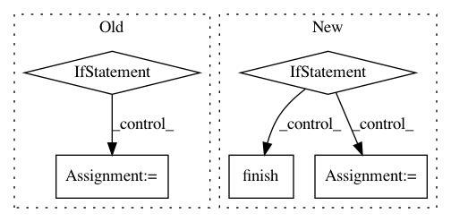

5818901a8b1b2301d7264dc7de58730bc008e5ef,petastorm/pytorch.py,BatchedDataLoader,_iter_impl,#BatchedDataLoader#,298
Before Change
// the requested batch_size ready.
keys = None
if self.shuffling_queue_capacity > 0:
// We can not know what is the reasonable number to use for the extra capacity, so we set a huge number
// and give up on the unbound growth protection mechanism.
// To keep the same behavior as DataLoader, we need to increase the shuffling_queue_capacity
min_after_dequeue = self.shuffling_queue_capacity - 1
shuffling_queue_capacity = min_after_dequeue + self.batch_size
self._shuffling_buffer = BatchedRandomShufflingBuffer(
shuffling_queue_capacity,
min_after_retrieve=min_after_dequeue,
extra_capacity=100000000,
batch_size=self.batch_size
)
else:
self._shuffling_buffer = BatchedNoopShufflingBuffer(batch_size=self.batch_size)
for row in self.reader:
// Default collate does not work nicely on namedtuples and treat them as lists
// Using dict will result in the yielded structures being dicts as well
row_as_dict = row._asdict()
After Change
other_shuffling_buffer.add_many(batch.values())
yield batch
if self.inmemory_cache_all:
for epoch in range(self.num_epochs - 1 if self.num_epochs else sys.maxsize):
other_shuffling_buffer.finish()
self._shuffling_buffer = other_shuffling_buffer
other_shuffling_buffer = instantiate_buffer_fn()
for batch in self._yield_batches(keys):
if self.num_epochs is None or self.num_epochs and epoch != self.num_epochs-2:
// We skip populating the other buffer in the last epoch.
other_shuffling_buffer.add_many(batch.values())
yield batch
def _yield_batches(self, keys):
while self._shuffling_buffer.can_retrieve():
batch = self._shuffling_buffer.retrieve()
if not isinstance(batch, dict):
In pattern: SUPERPATTERN
Frequency: 3
Non-data size: 5
Instances
Project Name: uber/petastorm
Commit Name: 5818901a8b1b2301d7264dc7de58730bc008e5ef
Time: 2020-12-11
Author: fardin@uber.com
File Name: petastorm/pytorch.py
Class Name: BatchedDataLoader
Method Name: _iter_impl
Project Name: tensorflow/tensorboard
Commit Name: 65f7aa962741a11aa2db3c77ce77efacb1219418
Time: 2018-03-15
Author: nfelt@users.noreply.github.com
File Name: tensorboard/plugins/beholder/beholder.py
Class Name: Beholder
Method Name: _update_recording
Project Name: wenwei202/iss-rnns
Commit Name: b519cde79a37ac166bb2ac8e42134bb09d8c9e0f
Time: 2016-07-25
Author: seominjoon@gmail.com
File Name: model/base_model.py
Class Name: BaseRunner
Method Name: eval